Run Status
Generation completed and best available report prepared. The report is published as a dated artifact with explicit research and verification limitations. No quality gate is used to suppress the day's GitHub outcome.
Remediation: retry direct Fortinet documentation access through a documentation-capable session; retry Pages verification after the latest deployment; continue the Community sweep for directly matched scenarios. The report remains publishable even if those stages fail.
Today's study objectives
Primary lesson topics were selected from Fortinet administration, configuration, new-feature and CLI documentation. Community/KB/TAC articles were used only as scenario research and were not promoted to primary lesson sources.
Contents
FortiGate · FortiOS 8.0.0
1. IPv6 prefix delegation: IA_PD from the ISP to routed downstream segments
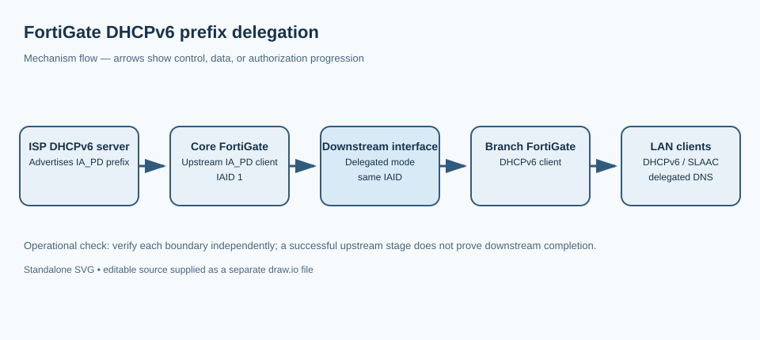
Purpose and object model
DHCPv6 Prefix Delegation (DHCPv6-PD) solves a different problem from giving one interface or one workstation an IPv6 address. An ISP delegates a routed prefix to a customer-edge router, and that router allocates sub-prefixes to downstream routed interfaces. FortiGate represents the upstream interface, one or more Identity Associations for Prefix Delegation (IA_PD), downstream interfaces in delegated mode, and optionally a DHCPv6 server or SLAAC on each downstream segment. The IAID is the join key: it binds the delegated prefix received upstream to the downstream interface and to the DHCPv6 server that advertises it.
A prefix hint such as ::/48 is a request or preference sent to the provider, not a promise that the provider will return that exact prefix. The actual delegated prefix, preferred lifetime, valid lifetime, and delegated DNS addresses are learned from the DHCPv6 server. Do not hard-code the hint as if it were the installed route. A provider may return a different length or a different prefix after a lease renewal, and the downstream configuration must follow the received IA_PD.
Packet and configuration flow
The ISP-facing FortiGate sends DHCPv6 client messages for an IA_PD and receives a Reply containing the delegated prefix and DNS information. The FortiGate then associates that IAID with a downstream interface. The downstream interface can use the delegated prefix directly; the FortiGate can also run a DHCPv6 server on that segment and pass the delegated DNS service to clients. A second FortiGate can use DHCPv6 client mode on its WAN-facing interface to request a further delegation from the first FortiGate. This is router-to-router prefix allocation, not DHCPv6 relay: the upstream router owns the lease and deliberately subdivides it.
The Fortinet example uses port1 as the upstream ISP interface, port5 as a delegated downstream interface, IAID 1, and a /48 hint. The downstream DHCPv6 server references the same upstream interface and IAID. Keep those values aligned; a syntactically valid delegated interface with the wrong IAID can remain unnumbered even though the upstream lease exists.
config system interface
edit "port1"
config ipv6
set dhcp6-prefix-delegation enable
config dhcp6-iapd-list
edit 1
set prefix-hint ::/48
next
end
end
next
edit "port5"
config ipv6
set ip6-mode delegated
set ip6-delegated-prefix-iaid 1
set ip6-upstream-interface "port1"
end
next
end
config system dhcp6 server
edit 1
set interface "port5"
set upstream-interface "port1"
set delegated-prefix-iaid 1
set dns-service delegated
set ip-mode delegated
next
endVerification: what the outputs prove
On the upstream interface, inspect the IPv6 configuration with get and confirm that DHCPv6 prefix delegation is enabled, the expected IAID is present, and a real delegated prefix plus preferred and valid lifetimes has been installed. The delegated DNS fields should also be populated if the provider supplies DNS. On the downstream interface, verify ip6-mode delegated, ip6-delegated-prefix-iaid, ip6-upstream-interface, and the resulting ip6-address. A configured IAID with no ip6-address proves only that the interface is configured to request a delegation; it does not prove that the upstream lease arrived.
For the child FortiGate, verify that its interface is in DHCP mode and that its obtained IPv6 address/prefix and DNS fields are populated. diagnose ipv6 address list confirms installed addresses and prefix lengths. The DNS proxy diagnostic confirms which DNS servers the local VDOM is actually using; a delegated DNS value in the interface output does not prove that a client can resolve names.
Troubleshooting and operational boundaries
If the upstream IA_PD is absent, start with the ISP-facing link, DHCPv6 client state, provider entitlement, and the prefix hint. If the upstream prefix exists but port5 is empty, compare the IAID and upstream-interface references on port5 and the DHCPv6 server. If the downstream FortiGate receives a prefix but LAN clients do not, check whether the upstream FortiGate is serving DHCPv6 or sending Router Advertisements with SLAAC, and verify that the downstream interface is actually connected to that segment. DNS failure is a separate path: check delegated DNS, DHCPv6 DNS service, RA RDNSS if SLAAC is used, and client resolver state.
Prefix delegation does not by itself create a firewall policy, route policy, or working default gateway on every downstream device. Confirm the RA/default-router path and the routing/policy path independently. Multiple IA_PD entries can be used when the provider delegates multiple prefixes; do not reuse an IAID accidentally. The guide describes the normal upstream/downstream flow but does not promise a particular HA lease-recovery behavior for every topology, so test failover and renewal with the actual provider before relying on a stable prefix across a maintenance event.
Scenario source: No directly matched Community/KB/TAC scenario was verified for this selected mechanism in the rolling window. Community research is retained separately and was not used as a primary lesson source.
Supporting guide: FortiOS 8.0 CLI reference
FortiManager · FortiManager 8.0.0
2. Protected object permissions: controlled editing without breaking policy reuse
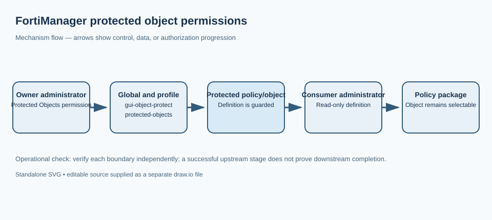
Purpose and security boundary
Protected object permissions add an object-level change-control boundary inside FortiManager. An administrator with the Protected Objects permission can mark selected policy packages, firewall policies, and policy objects as protected. Other administrators who do not have that permission receive read-only access to the protected item. Crucially, they can still select and reference a protected object when building a policy. The feature therefore separates the authority to change a shared object from the authority to consume it.
This is not the same as ADOM access, workspace mode, policy locking, or a global read-only administrator profile. A user may have normal write access to other objects in the ADOM while being blocked from modifying only the protected subset. Conversely, the protection is not a replacement for an approval workflow: an administrator who has Protected Objects permission can still change the protected item.
Enablement and transaction flow
FortiManager 8.0 requires two layers to be configured before the feature can be used. First, the global GUI visibility switch must be enabled so the Protected Objects controls are exposed. Second, an administrator profile must include Protected Objects permission and that profile must be assigned to the administrator who will designate protected items. That privileged administrator then edits a policy package, enables the Protected option on a policy, or protects a policy object. The Protected column provides a visible state in the policy table.
When another administrator opens the protected object, FortiManager suppresses the editable Protected toggle and prevents changes from being saved. The same administrator can still use the object in a policy package. That distinction is operationally important: the object remains part of the configuration graph, but its definition is guarded.
config system global
set gui-object-protect enable
end
config system admin profile
edit "policy-consumer"
set protected-objects disable
next
edit "object-owner"
set protected-objects enable
next
endVerification and evidence
Verify the global gui-object-protect setting and inspect the administrator profile assigned to the test user; checking an unassigned profile is not sufficient. In Policy & Objects, the protected item should show Enabled in the Protected column. Test with two accounts: the owner account should be able to set or clear protection and edit the object; the consumer account should be able to select the object in a policy but should not see the protection toggle or be able to save a change to the object definition.
A successful policy install using the protected object proves that the object can be consumed by the package. It does not prove that the object is protected from edits. Conversely, an edit failure alone does not prove the feature is configured correctly; the user may simply lack ordinary ADOM or object permissions. Verify the specific Protected Objects permission and the protected state.
Troubleshooting and operational use
If the Protected option is missing for every administrator, check gui-object-protect first. If the option is visible to one administrator but not another, compare their assigned admin profiles and confirm the profile is attached to the account in the relevant ADOM context. If an administrator can edit an item that should be protected, verify that the item itself was marked protected and that the administrator does not have the Protected Objects permission. Do not troubleshoot this as a device-side FortiGate policy problem; the control is enforced in the FortiManager management plane.
Use the feature for baseline objects such as approved address groups, shared service objects, and centrally governed firewall policies. Keep a documented owner group with the ability to protect and unprotect objects, and a separate consumer group that can reference them. Before a major upgrade or role redesign, test both personas because profile variables and global GUI settings are version-sensitive. Protected status does not validate the semantics of the object or guarantee that the resulting policy is safe; it only limits who can modify the protected definition.
Scenario source: No directly matched Community/KB/TAC scenario was verified for this selected mechanism in the rolling window. Community research is retained separately and was not used as a primary lesson source.
Supporting guide: FortiManager 8.0 New Features
FortiAnalyzer · FortiAnalyzer 8.0.0
3. IOC rescan lifecycle: FortiGuard TIDB, historical logs, and tagged alerts
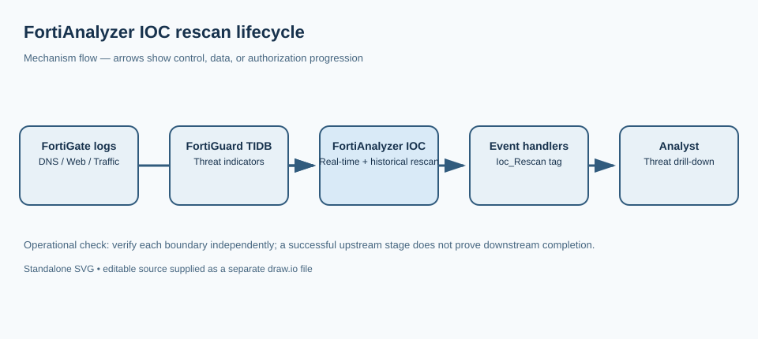
Purpose and detection inputs
FortiAnalyzer Indicators of Compromise (IOC) compares supported log fields such as source or destination IP, domain, and URL against the FortiGuard Threat Intelligence Database (TIDB). A match can identify a host that contacted an address or domain later classified as malicious. The IOC service is license-gated: a valid IOC service license enables current FortiGuard threat packages, while demo or stale packages can produce incomplete or misleading results. IOC is therefore both a detection engine and a data-freshness dependency.
There are two distinct detection timelines. Real-time IOC evaluates incoming logs as they arrive. Historical rescan revisits previously stored logs after a scheduled time or when a new FortiGuard package is received. The rescan policy is scoped by global settings and current-ADOM settings, including which log types and how many prior days are eligible. Do not assume that enabling IOC automatically means all retained historical logs are being rescanned.
Rescan workflow and event-handler interaction
The rescan pane is configured from FortiView > Threats > Indicator of Compromise. Global rescan must be enabled, then the current ADOM must also enable rescan and select log types such as DNS, Web Filter, Traffic, or Email filter. The policy can run at a selected hour or on package update. The documented default scan window is the previous 14 days; the maximum recommended window is based on observed scan speed, or 30 days when no prior speed history exists.
Logs found by historical rescan receive the Ioc_Rescan tag. Event handlers that include that tag can process rescanned logs and generate alerts that are themselves tagged. The default compromised-host event handlers include the tag. Real-time IOC matches continue to generate alerts without Ioc_Rescan, so the tag is a useful way to distinguish a newly arrived match from a later discovery caused by an updated threat package.
config system log ioc
set status enable
set rescan-status enable
set rescan-run-at 0
set rescan-max-runner 8
endEvidence and verification
Use diagnose test application sqllogd 204 stats to confirm that the IOC service license is installed and to inspect TIDB version, load time, and database statistics. Use get system log ioc to verify status, rescan-status, rescan-run-at, and rescan-max-runner. In the GUI, inspect the Rescan Tasks table for start time, status, percentage, threat count, log count, package update time, and blocklist count. A completed task with zero threats proves that the selected log set was scanned; it does not prove that no threat exists in excluded log types or outside the configured date range.
Select a non-zero threat count to inspect Detect Pattern, Threat Type, Threat Name, number of events, and endpoint. The rescan icon in Last Detected and the Only Show Rescan filter help isolate historical discoveries. If a log is real-time rather than rescanned, it should not carry the Ioc_Rescan tag; that difference is expected, not an inconsistency.
Failure modes and operational controls
If the rescan task list is empty, verify the IOC license, global rescan toggle, current-ADOM toggle, selected log types, and next run time before restarting services. If IOC alerts appear to be false positives, compare the license and TIDB freshness: the demo package shipped with firmware is not equivalent to the refreshed licensed package. If the license is valid but the service is disabled, get system log ioc will show status disable; enable the service and re-check the loaded database.
Rescans consume CPU and database I/O. rescan-max-runner controls concurrent rescan workers, with a documented default of eight and an upper bound tied to CPU count. Increasing concurrency can shorten a backlog but can also compete with interactive analytics and report workloads. Scope the scan by ADOM, log type, and date range, schedule it around ingestion peaks, and retain the task metadata so an analyst can explain why a host was flagged after a new package arrived.
Scenario source: No directly matched Community/KB/TAC scenario was verified for this selected mechanism in the rolling window. Community research is retained separately and was not used as a primary lesson source.
Supporting guide: FortiAnalyzer 8.0 IOC CLI reference
FortiSwitch · FortiSwitchOS 8.0.0
4. FIDO2-backed OpenSSH security keys for administrator MFA
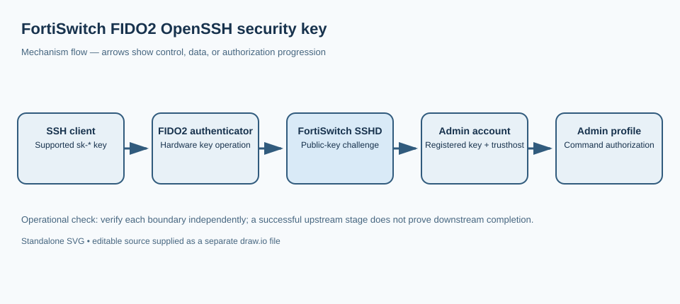
What changed and what it does not mean
FortiSwitchOS 8.0.0 adds support for two OpenSSH security-key algorithms: sk-ecdsa-sha2-nistp256 and sk-ssh-ed25519. These are the security-key forms used with FIDO2-capable hardware authenticators. The important change is algorithm support on the switch side; it is not a new RADIUS server, TACACS+ policy, or centralized identity store. The SSH client and its hardware authenticator participate in the key operation, while FortiSwitch validates the presented public-key credential for the administrator account.
Do not confuse FIDO2-backed security-key MFA with the older administrator SSH public-key fields. The FortiSwitch administration guide allows up to three SSH client public keys to be configured for an administrator; those clients can authenticate without being asked for the administrator password. That is public-key authentication. The 8.0 release-note addition of sk-* key types is the hardware-backed security-key capability. A plain static SSH key and a FIDO2 security-key credential are not interchangeable security claims.
Administrator object and authentication flow
A FortiSwitch administrator account combines the account name, access profile, trusted-host restrictions, and supported authentication material. The admin profile controls which features the account can view or edit; trusted hosts restrict where the account can connect from. For SSH, the switch stores the authorized public-key material associated with the account. When a client offers a supported security-key public key, the SSH protocol performs the signed challenge exchange; the private key operation is performed through the security-key authenticator rather than exporting the private key as a normal file.
The administrator must first create the key pair using an SSH client application and register the public key with the intended administrator account. The CLI exposes ssh-public-key1, ssh-public-key2, and ssh-public-key3; the GUI exposes Key 1 through Key 3. The release notes identify the supported FIDO2 OpenSSH key types, but do not specify every authenticator PIN, touch, or user-verification policy. Those details depend on the client and authenticator, so validate the actual client/authenticator combination rather than assuming a particular PIN policy.
config system admin
edit "netops-fido"
set accprofile "netops-readwrite"
set ssh-public-key1 "<supported-sk-key-type> <public-key-data>"
set trusthost1 192.0.2.0 255.255.255.0
next
endVerification and troubleshooting
Test from a controlled management host with verbose SSH client output and confirm that the offered key algorithm is one of the supported sk-* types and that the server accepts the expected administrator account. Confirm that the account is assigned the intended access profile and trusted-host list. If the login succeeds but the user cannot execute a command, that is an authorization/profile issue rather than a FIDO2 authentication failure. If the key is rejected before account authorization, compare the client algorithm, registered public key, username, and firmware support.
Keep a separate break-glass account and an out-of-band recovery path before replacing administrator keys. Test both primary and secondary management paths, and verify that the new key works before removing the old one. If the switch is managed by FortiGate, remember that controller-to-switch SSH management has its own host-key compatibility boundary; a FIDO2 administrator key on the switch does not repair a FortiGate-to-switch host-key negotiation problem.
Operational caveats
FIDO2-backed SSH keys are most useful for privileged interactive administration from managed engineering workstations. They reduce reliance on reusable passwords, but they do not replace least-privilege admin profiles, trusted-host restrictions, configuration auditing, or account lifecycle controls. Record which physical authenticator is associated with each administrator, maintain a recovery procedure for lost hardware, and test firmware upgrades and downgrade paths on a lab switch before broad deployment.
The source material confirms the two algorithms and the ordinary administrator public-key configuration path. It does not publish a complete matrix of supported FIDO2 devices or client versions. Do not infer universal authenticator compatibility from the algorithm name alone; validate the SSH client, security-key firmware, and FortiSwitchOS build together.
Scenario source: No directly matched Community/KB/TAC scenario was verified for this selected mechanism in the rolling window. Community research is retained separately and was not used as a primary lesson source.
Supporting guide: FortiSwitch administrator configuration
FortiAP/Wireless · FortiAP/FortiOS 8.0.0
5. Clear Channel Assessment threshold tuning for high-density radios
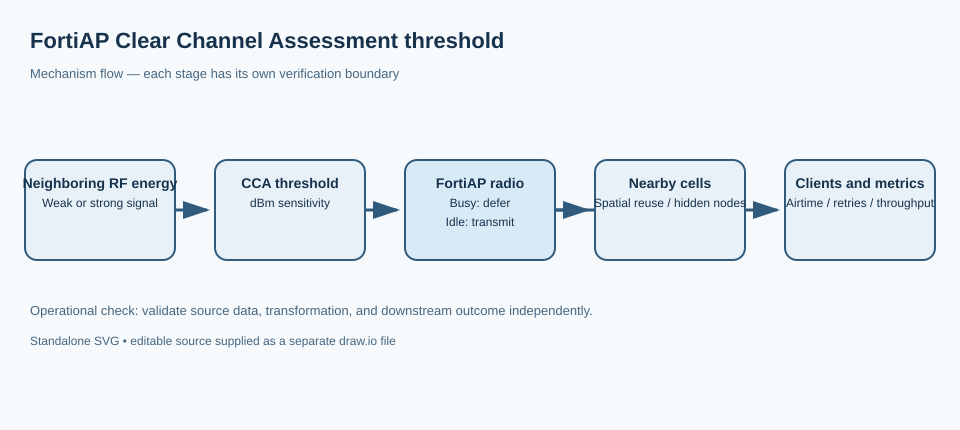
Radio behavior and design purpose
Clear Channel Assessment (CCA) is the radio's carrier-sense decision about whether the medium is busy. The configurable CCA threshold changes how weak a received signal must be before the radio treats the channel as occupied and defers transmission. FortiOS 8.0 exposes cca-threshold under each radio in a FortiAP WTP profile and allows a per-AP override. The documented range is -94 to -11 dBm; value 0 means unconfigured, so the FortiAP uses the Wi-Fi driver's predefined value.
A lower, more negative threshold makes the radio more sensitive to neighboring transmissions. It detects weaker energy, defers more often, and can reduce collisions, but it can also suppress useful transmissions and reduce throughput. A higher, less negative threshold ignores weaker neighboring signals and allows more spatial reuse, which can improve throughput in dense deployments. The trade-off is increased collision and hidden-node risk. CCA tuning is therefore a local contention-domain adjustment, not a transmit-power setting or channel-selection algorithm.
Configuration scope and precedence
The normal configuration belongs in the WTP profile, under the radio that should use the threshold. This lets the operator apply a consistent radio policy to a group of APs. A specific FortiAP can override the profile, but the override must be enabled; otherwise the profile remains the source of truth. This distinction matters when one AP has a different RF environment, such as a conference room next to a high-density auditorium.
Use a small change set. Tune one band or radio group, record the current threshold, and compare airtime utilization, retries, channel occupancy, and client throughput before widening the change. A value that helps 5 GHz in a dense office may not be appropriate for 2.4 GHz in a low-density warehouse. Regulatory domain and hardware capabilities still constrain channels and power; CCA does not override those controls.
config wireless-controller wtp-profile
edit "FAP431F-default"
config radio-1
set cca-threshold "-72"
end
config radio-2
set cca-threshold "-70"
end
next
end
config wireless-controller wtp
edit "FP431FTF23099ZAZ"
config radio-1
set override-cca-threshold enable
set cca-threshold "-74"
end
next
endVerification and evidence
From the FortiGate controller, run diagnose wireless-controller wlac -c wtp and inspect each radio's cca_threshold, WTP profile, and override state. From the FortiAP, run cw_diag -c radio-cfg and confirm the effective threshold for each radio. A profile containing -72 dBm is not proof that a specific AP is operating at -72 dBm if an override is enabled. The AP-side radio output is the best evidence of the value actually applied.
Correlate the configured threshold with noise floor, channel utilization, retry counters, and client behavior. A lower threshold may reduce collision symptoms while increasing deferral and latency. A higher threshold may raise throughput but increase retries if hidden nodes cannot hear one another. A high channel-utilization number alone does not prove that CCA is misconfigured; it can also reflect legitimate airtime demand, interference, or a narrow channel plan.
Troubleshooting and boundaries
If the value is not taking effect, verify the WTP profile assigned to the AP, the radio section, and the per-device override flag. If the controller shows the expected profile but the AP reports a different value, inspect the override and confirm the AP has received the latest profile. If an AP is repeatedly leaving CAPWAP with a DTLS-peer-disconnected reason, investigate the control channel, reachability, and AP profile compatibility; changing CCA does not repair an IKE/DTLS or controller-liveness failure.
The best starting point is the unconfigured driver default, then a measured adjustment based on the RF environment. Avoid copying a threshold across all radios simply because one cell improved. CCA is a local radio behavior that interacts with overlapping cells and hidden nodes, so validate both the tuned AP and neighboring APs after each change.
Scenario source: No directly matched Community/KB/TAC scenario was verified for this selected mechanism in the rolling window. Community research is retained separately and was not used as a primary lesson source.
Supporting guide: FortiAP high-density configuration guide
FortiNAC · FortiNAC 9.4.0
6. Device profiling rules: ordered rogue evaluation and host lifecycle
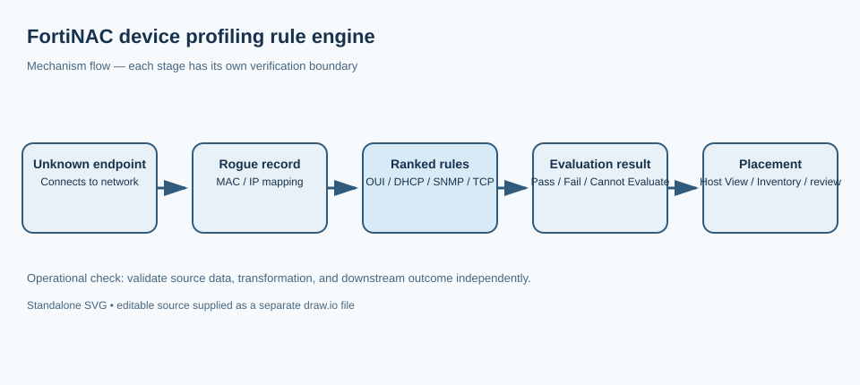
Purpose and state transitions
FortiNAC device profiling rules classify unknown hosts that connect to the network. The profiler is not simply a lookup table that labels every MAC address. FortiNAC first learns that a device has connected, checks Device Identity against known MAC addresses, and creates a rogue host record when the MAC is unknown. It can wait up to 30 minutes for normal Layer 3 polling to resolve the IP-to-MAC relationship before it starts evaluating rules that require an IP address.
The engine compares a rogue against enabled rules in rank order. A rule combines a selected device type with one or more identification methods, such as vendor OUI, location, IP range, DHCP fingerprint, TCP/UDP port scan, SNMP, NMAP, passive fingerprinting, RADIUS request, or other supported probes. The first rule that satisfies its criteria can classify the host. Depending on the rule, the host may be registered into Host View, Inventory, both, or remain a rogue associated with a rule for manual review.
Evaluation semantics and rule ordering
The most important diagnostic distinction is Pass, Fail, and Cannot Evaluate. Pass means the rule's criteria matched and its configured registration action is applied. Fail means the device did not match that rule, so evaluation continues to the next ranked rule. Cannot Evaluate means a required data item is missing or stale; evaluation stops at that rule. A rogue can therefore remain unclassified even though a lower-ranked rule would have matched, because the engine did not have enough current evidence to decide the higher-ranked rule.
Order rules by the cost and availability of their methods. Already-collected information such as vendor OUI and location is cheaper than a probe that requires an IP address or an active scan. Methods that require current L3 information should be placed after inexpensive checks; DHCP fingerprinting should not block static-IP devices because those devices may not generate the DHCP fingerprint the rule expects. FortiNAC best practices recommend placing specific, low-cost methods before active TCP/UDP/NMAP or location checks.
Registration destination and re-evaluation limits
A matching rule can place the device in Inventory, Host View, or both. Inventory is useful when the device should be polled for connection status; Host View provides connection history and the ability to associate the host with a user. A device placed in Inventory only is not shown in the Profiled Devices tab. A host that becomes associated with a user is removed from Profiled Devices and appears in Host View. These are expected lifecycle transitions, not missing records.
The Run button re-evaluates rogues that remain eligible; it does not retroactively re-run rules against devices that are already registered or placed in Inventory. FortiNAC explicitly notes that the profiler does not see devices that are no longer rogues. If a rule is changed after a host has been registered, changing the rule and clicking Run is not enough to reclassify that host. Plan the re-registration or deletion/relearn process carefully because it can change enforcement state.
Verification and troubleshooting
Use the Rogue Evaluation Queue Size to see whether rogues are waiting or the queue is draining. In Profiled Devices, inspect Rule Name, Type, Role, Registered state, IP/MAC, location, and rule-confirmation fields. Rule confirmation can run on connect or at a configured interval; a failure action can disable a device or take no action. A device must be online for manual Confirm Rule to evaluate it. The queue count moving down proves work is being processed, not that every rogue has a matching rule.
When a host remains rogue, confirm that the host is still online, that the MAC is known, and that FortiNAC has a fresh IP-to-MAC mapping. If the first nonmatching rule returns Cannot Evaluate, move the data-dependent rule lower or repair its data source. For DHCP methods, verify IP helper configuration on L3 devices; for SNMP methods, validate credentials and OID results; for active scans, verify reachability and endpoint response. Avoid solving a missing-data condition by simply making the Catch All rule auto-register every device.
Scenario source: No directly matched Community/KB/TAC scenario was verified for this selected mechanism in the rolling window. Community research is retained separately and was not used as a primary lesson source.
Supporting guide: FortiNAC profiler workflow
FortiNAC-F · FortiNAC-F 7.6.0
7. Network-device discovery with SNMP and recursive CDP expansion
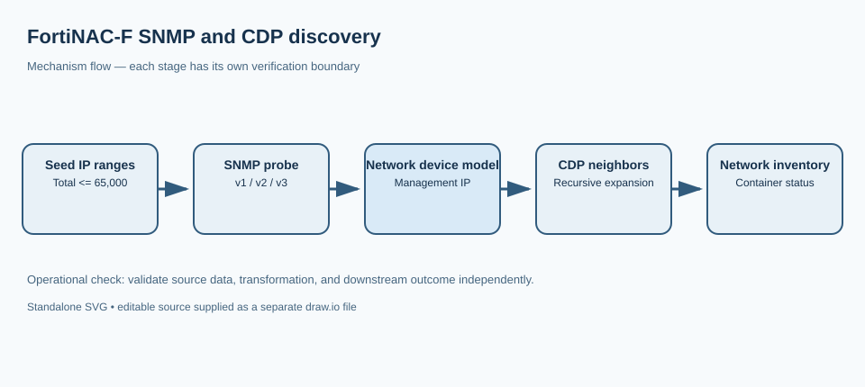
Discovery scope and inventory model
FortiNAC-F network-device discovery is different from endpoint device profiling. Discovery starts with one or more IP ranges and determines which SNMP-enabled network devices exist in those ranges. When a device responds, FortiNAC creates a model in its database and places it in the Network Devices list. The discovery process can receive traps and communicate with devices using SNMPv1, SNMPv2, or SNMPv3. For FortiNAC-OS, the SNMP management service must be allowed on the interface; the documented requirement is that snmp be included in the set allowaccess command.
The optional Use CDP setting expands discovery beyond the initial IP range. FortiNAC queries a discovered device for information about other devices connected to it. If CDP is enabled on that device, it can return neighbor information, and FortiNAC can query those secondary devices and continue until it reaches the edge of the discoverable network. CDP is therefore a recursive topology-expansion input, not a generic IP scanner that can see every device.
Transaction flow and scale limits
The operator defines search criteria for a container, including the IP ranges and whether CDP should be used. FortiNAC probes candidate addresses through SNMP, creates device models for responders, and optionally follows CDP neighbor information to discover additional routers and switches. The container view displays the discovery process status; Refresh updates that status while the scan is running. A large network can take a long time because the process is bounded by address count, SNMP response time, device count, and recursive neighbor expansion.
The Fortinet guide sets a planning limit: the total number of IP addresses across all configured ranges should not exceed 65,000 for a discovery process. Calculate the sum across all ranges, not just the size of each individual range. The guide also warns that a device with multiple interfaces, each using a different IP address and its own SNMP settings, can appear more than once. FortiNAC does not automatically consolidate those duplicate models in this case.
Configuration and security
Use a dedicated SNMPv3 user with authentication and privacy where supported. Ensure the device allows SNMP from the FortiNAC management source and that ACLs permit the SNMP query and response path. If the device uses a separate management VRF or interface, discovery must originate from a reachable FortiNAC interface. A successful ping is not sufficient proof of SNMP reachability, because UDP/161 may be filtered or the SNMP user, authentication protocol, privacy protocol, or context may be wrong.
For FortiNAC-OS, verify that the interface's allowaccess list includes snmp. For other managed devices, verify their own SNMP service and permitted managers. CDP expansion is useful only when the discovered network devices actually advertise CDP neighbor data; it will not infer links from arbitrary LLDP data unless the specific discovery feature supports it. Treat CDP as an optional enhancement and retain the IP-range seed as the explicit discovery boundary.
config system interface
edit "port2"
set allowaccess ping https ssh snmp
next
end
# Discovery planning
# - Sum of all IP ranges <= 65,000 addresses
# - Validate SNMPv3 credentials from FortiNAC
# - Enable CDP only where neighbors advertise CDPVerification and troubleshooting
After starting discovery, refresh the Containers view and inspect its status. Confirm that responding devices appear in Network Devices with the expected model, IP, and management attributes. If the discovery count is lower than expected, test SNMP from the FortiNAC appliance, verify UDP/161 and the return path, confirm SNMP version and credentials, and check allowaccess snmp on FortiNAC-OS. If only the initial seed devices appear, verify that CDP is enabled on those devices and that neighbor information is populated.
If duplicate models appear, compare the device's interfaces and SNMP settings rather than assuming that FortiNAC has duplicated one IP range. The guide describes multiple representations when multiple interfaces have different addresses and SNMP settings; it does not describe automatic deduplication. If a scan never completes, recompute the total address count, reduce the range to a controlled subset, and test discovery on one container before scaling out.
Scenario source: No directly matched Community/KB/TAC scenario was verified for this selected mechanism in the rolling window. Community research is retained separately and was not used as a primary lesson source.
Supporting guide: FortiNAC-F discovery guide
FortiAuthenticator · FortiAuthenticator 6.6.7
8. RADIUS accounting proxy: attribute transformation and RSSO fan-out
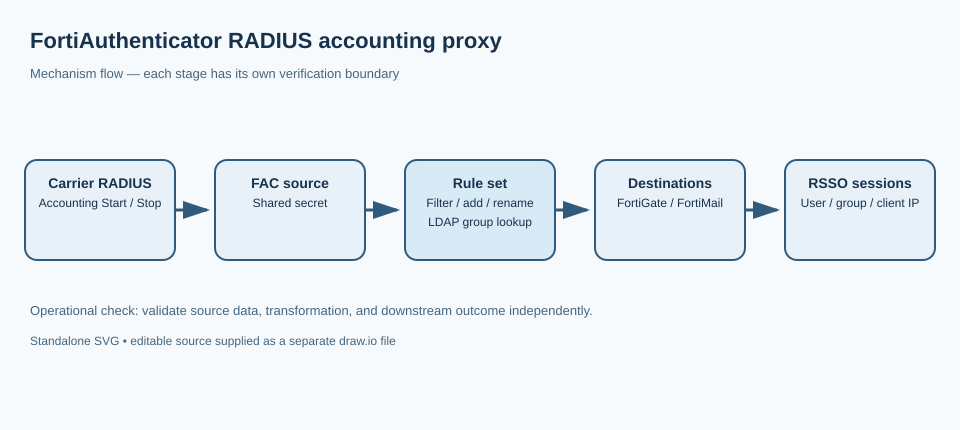
Why an accounting proxy exists
RADIUS Single Sign-On (RSSO) allows a FortiGate or FortiMail to identify users who authenticated on an external RADIUS server by parsing RADIUS accounting records. Some carrier or enterprise RADIUS servers can send accounting records to only one endpoint, while several FortiGate/FortiMail systems may need the same session information. The FortiAuthenticator accounting proxy solves that fan-out problem: it receives the accounting packets, transforms selected attributes, and forwards the resulting records to multiple subscribing destinations.
The proxy is not the same as a RADIUS authentication policy. It processes accounting traffic such as Start, Stop, and Interim-Update records after the original access decision has occurred. The proxy needs three distinct objects: sources that identify the upstream RADIUS accounting server and shared secret; rule sets that filter and transform attributes; and destinations that identify each downstream FortiGate or FortiMail and its shared secret.
Transformation and replication workflow
A rule set can add a fixed attribute, add an attribute derived from a user's LDAP group membership, or rename an incoming attribute to match what a destination expects. Rules can match incoming RADIUS attributes so that only selected accounting records are proxied. For example, an incoming record containing User-Name, NAS-IP-Address, and Fortinet-Client-IP-Address can be augmented with a fixed Session-Timeout of 3600 and a Fortinet-Group-Name derived from the user's LDAP group membership. The same transformed accounting record can then be sent to multiple destinations.
A destination binds together the destination address, its shared secret, the source object, and the rule set to apply. This makes the proxy a policy-aware fan-out point rather than a blind UDP forwarder. The destination can be configured for a FortiGate or FortiMail that consumes the records for RSSO. Keep source and destination secrets separate; a successful source authentication does not prove that the downstream destination accepted the forwarded packet.
Example rule-set intent (GUI fields):
Incoming: User-Name, NAS-IP-Address, Fortinet-Client-IP-Address
Rule 1: Add Session-Timeout = 3600 (static value)
Rule 2: Add Fortinet-Group-Name from LDAP group membership
Destination: FortiGate/FortiMail + destination secret + source + rule setScale, cache, and operational parameters
FortiAuthenticator 6.6.7 documents up to 25 rule sets, 500 proxy sources, and 500 destinations. The group cache lifetime is configurable from 1 to 10,080 minutes, with a default of 480 minutes. Proxy retries can be set from zero to three, default three; retry timeout is one to ten seconds, default five. Statistics update period is configurable from one to 3,600 seconds, default five. These are operational controls: a long group cache can preserve stale membership after a user changes groups, while aggressive retries can increase load when a destination is unavailable.
Because the proxy relies on LDAP to derive group names, LDAP reachability and user-name attribute mapping are part of the accounting pipeline. If the RADIUS server sends a User-Name format that does not map to the LDAP directory, the packet can be received and forwarded without the expected group attribute. Verify the username attribute and group filter against a known user before rolling out a broad rule set.
Evidence and troubleshooting
Validate the source definition and shared secret first, then inspect the matching-attribute filter and transformation rules, then test each destination independently. On the FortiGate side, verify that RSSO is enabled, the receiving interface accepts RADIUS accounting, and the expected User-Name, NAS-IP-Address, client IP, and group attributes are present. The session table should show the user/group mapping expected by the RSSO policy. A missing user session does not immediately prove the accounting packet was not received; it may have been filtered, transformed incorrectly, or rejected at the destination.
If group membership is stale, compare the cache lifetime with the directory change time and test a known LDAP user. If only one FortiGate misses sessions, compare that destination's address, secret, source binding, and rule set with a working destination. If all destinations miss records, inspect the upstream source and the proxy's matching rules before changing every downstream firewall. Treat the proxy as a shared identity data plane with its own monitoring and failure domain.
Scenario source: No directly matched Community/KB/TAC scenario was verified for this selected mechanism in the rolling window. Community research is retained separately and was not used as a primary lesson source.
Supporting guide: FortiAuthenticator RSSO guide
FortiPAM · FortiPAM 1.9.0
9. Remote user groups: LDAP, RADIUS, and SAML membership projection
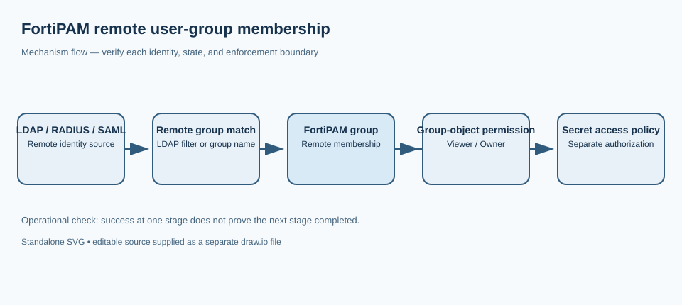
Purpose and group model
FortiPAM user groups can contain local users or references to remote identity groups. A group of type Remote can include remote servers such as LDAP, RADIUS, and SAML, and can optionally restrict membership to a specific remote group. This lets an organization keep identity membership in its directory or identity provider while using FortiPAM groups as the local authorization boundary. The User Groups table exposes User Members, Remote Groups, and Remote Members so an administrator can see whether membership is local or projected from an external source.
Two default groups are documented: everyone, to which every user belongs, and fortipam_auth_group, which contains the Super Administrator account on applicable upgraded instances. The latter is not available on a fresh FortiPAM 1.6.0-or-later instance, so automation should not assume that it exists in every deployment. Remote membership is separate from manually importing a user account; it is a group mapping that can represent many users and can be constrained by remote group criteria.
Membership resolution workflow
Create and configure the remote authentication server first. Then create a user group, set Type to Remote, and add one or more remote groups. For LDAP, the administrator can select remote users, filter by group, or enter a custom LDAP filter. The guide shows filters using AND/OR clauses, for example matching person objects whose givenName begins with a letter, or selecting POSIX groups. The syntax is directory-specific, so validate the filter against the actual LDAP schema.
For RADIUS and SAML, the remote group match uses explicit group names. At least one corresponding remote server must already be configured. The resulting group contains the remote users that match the selected server/group definition. The FortiPAM user-group object then has a Permission tab: Access can be Everyone or Customized, and customized user permissions can designate Viewer or Owner for the user-group object.
config user group
edit "ldap_ops"
set member "ldap_server"
config match
edit 1
set server-name "ldap_server"
set group-name "cn=User,dc=example,dc=com"
next
end
next
endAuthorization boundaries
Be careful with the Permission tab's terminology. Viewer and Owner are permissions on the user-group object: Viewer can view the group; Owner can create, edit, and delete user groups. That is not the same thing as granting a remote user permission to launch a privileged secret or open a managed session. Secret access is governed by the relevant FortiPAM resource, secret, and access-control configuration. Do not infer that making a user an Owner of a group automatically grants access to every password in the vault.
The remote group is therefore one input to FortiPAM's identity and authorization model, not a substitute for resource-specific least privilege. Map remote groups narrowly, separate administrators who can manage group definitions from operators who can consume secrets, and test both membership resolution and the resulting access decision.
Verification and troubleshooting
Inspect the User Groups table and confirm that the intended Remote Groups and Remote Members appear. For LDAP, test the remote server, base DN, group DN, filter syntax, and whether subtree search is enabled. For RADIUS and SAML, compare the group name configured in FortiPAM with the group attribute or name emitted by the remote server; spelling and case differences can create a group that looks configured but never matches a user.
If authentication succeeds but the user is absent from the intended group, investigate group mapping before changing the secret's access policy. If the user appears in the group but cannot launch a secret, inspect the resource/secret access policy separately. If a user can edit group definitions unexpectedly, inspect the Customized permission assignment and Owner role. The most useful troubleshooting split is identity authentication, remote-group membership, FortiPAM group-object administration, and secret-resource authorization.
Scenario source: No directly matched Community/KB/TAC scenario was verified for this selected mechanism in the rolling window. Community research is retained separately and was not used as a primary lesson source.
Supporting guide: FortiPAM remote-group example
FortiSIEM · FortiSIEM 7.5.0
10. FortiEMS discovery and endpoint tagging as a ZTNA remediation loop
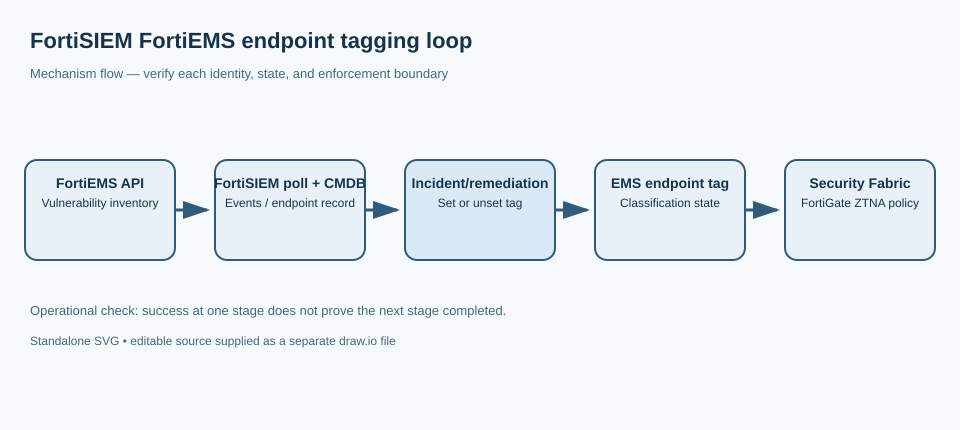
Data path from EMS to the SIEM CMDB
FortiSIEM can discover FortiClient EMS servers through the FortiEMS Management Server API using basic username/password authentication. On a default five-minute pull interval, FortiSIEM retrieves vulnerability information for managed FortiClient endpoints. The vulnerability data is normalized into log events; if an endpoint does not already exist, the events can create a CMDB entry for the device as unmanaged. This gives analysts vulnerability context even when the endpoint is not independently discovered by another device protocol.
Discovery is not complete when the credential object is saved. FortiSIEM must associate the EMS hostname/IP with the correct credential, create a discovery entry, run discovery, and enable event pulling. The documented credential protocol is FORTIEMS_API; the EMS serial number is required for the remediation scripts that set or unset tags. A successful ping is not the connectivity test because the API endpoint may be reachable over HTTPS even when ICMP is blocked.
Tag remediation and enforcement chain
FortiSIEM can set or unset a FortiEMS endpoint tag from an incident or investigation, either ad hoc or through an automation/notification policy. The two primary remediation scripts are Set tag for device in FortiEMS and Unset tag for device in FortiEMS. The EMS tag can be manually defined or associated with a rule. FortiGate and other Fortinet Security Fabric members can import EMS classification tags and reference them in ZTNA firewall rules.
This creates a closed-loop workflow: FortiEMS supplies endpoint vulnerability context; FortiSIEM creates or enriches the CMDB endpoint; an incident rule identifies a suspicious or vulnerable endpoint; a remediation script changes the EMS tag; the endpoint's tag is imported into the Security Fabric; and a FortiGate ZTNA rule can restrict the endpoint. The tag change is not itself a firewall block. The enforcement point must import the tag and have a policy that references it.
FortiSIEM credential checklist:
Device Type: Fortinet FortiClient EMS
Access Protocol: FORTIEMS_API
Pull Interval: 5 minutes (default)
Port: 443 unless EMS admin port differs
Credential: EMS administrator with read permissions; add write permissions for tag remediation
Discovery: EMS host/IP mapped to credential, then Discover and Pull EventsLeast privilege and verification
If the objective is vulnerability ingestion only, Fortinet documents that a read-only EMS role can be used. If FortiSIEM must set or unset tags, the EMS role needs additional endpoint, policy, and settings permissions. Use a dedicated administrator, restrict login to the FortiSIEM collector's trusted host where possible, and avoid granting broad EMS administrative rights simply to make a remediation script work.
Verify the credential with Test Connectivity without Ping, run the discovery entry, and inspect the Pull Events page. A green check next to the EMS job indicates that the pull job is running successfully; confirm that EMS events appear in Analytics and that endpoint records are present in the CMDB. Then test a tag action on a lab endpoint and verify the tag in EMS. Finally verify that the Security Fabric member imported the tag and that the intended ZTNA rule matches it. Each stage proves a different boundary.
Troubleshooting and caveats
If discovery succeeds but vulnerabilities are absent, check the Pull Events job, pull interval, EMS role permissions, and endpoint management state. If events exist but tag remediation fails, verify that the EMS credential has write permissions and that the EMS serial number is correct; the serial number is used by the remediation scripts. If the tag changes in EMS but the firewall does not react, inspect Security Fabric discovery/tag import and the ZTNA policy rather than repeating the remediation script.
The five-minute default is a polling interval, not an immediate event push. Changing it to one minute can increase API load; the documented range is one to 1,440 minutes. Treat the EMS API, FortiSIEM CMDB, remediation framework, and FortiGate tag import as separate systems with separate logs and success criteria.
Scenario source: No directly matched Community/KB/TAC scenario was verified for this selected mechanism in the rolling window. Community research is retained separately and was not used as a primary lesson source.
Supporting guide: FortiSIEM release guide
FortiSASE · FortiSASE 26.1.107
11. IPsec agent-tunnel dead peer detection: idle probes, on-demand probes, and change impact
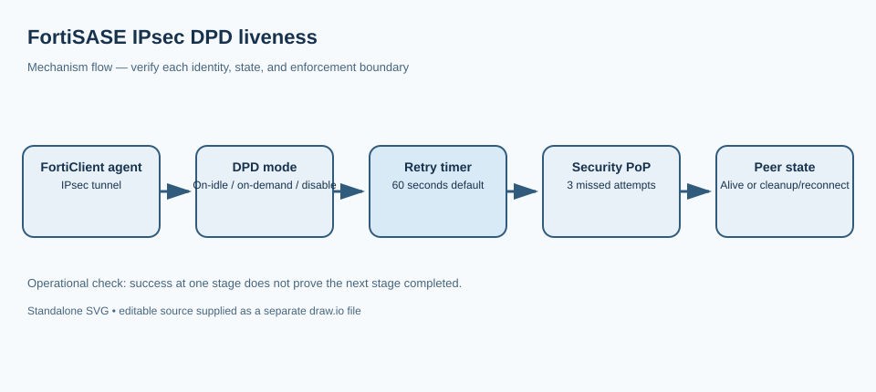
Purpose and tunnel state
Dead Peer Detection (DPD) is an IKE liveness mechanism for IPsec agent tunnels. It helps FortiSASE determine whether an idle peer is still reachable and cleans up dead IKE peers when necessary. Without an active liveness mechanism, a tunnel can remain represented as established after the remote endpoint or path has disappeared. With overly aggressive probes, however, a lossy or highly variable path can be mistaken for a dead peer. DPD settings are therefore a trade-off between stale-state cleanup, probe overhead, and tolerance of transient packet loss.
FortiSASE exposes three behaviors for Security PoPs. Disable means the PoP does not actively generate DPD messages, but it still responds to DPD messages received from the other peer. On-idle triggers DPD when the IPsec tunnel is idle and is the documented default. On-demand sends DPD only when outgoing messages have been transmitted but no incoming messages have been received during the configured retry interval. On-demand is useful when traffic is unpredictable and the operator wants a response when traffic is actually waiting.
Configuration scope and retry behavior
For Security PoPs, DPD settings are configured under Endpoint management > Endpoint profiles > Global connection settings. Agent-tunnel DPD can also be configured in Advanced settings within the endpoint profile for the FortiSASE Cloud Security tunnel or a custom tunnel. When DPD is enabled, specify retry count and retry interval. The documented Security PoP default is a 60-second interval and three missed attempts before the peer is declared dead and the agent tunnel is dropped.
The endpoint profile and Security PoP settings should normally be aligned. If the endpoint and PoP use materially different retry behavior, one side can declare the tunnel dead sooner than the other expects. For custom IPsec tunnels, the remote gateway's DPD behavior should also be considered; the FortiSASE setting does not remove the need for compatible peer behavior.
Security PoP DPD behavior (documented defaults):
Mode: on-idle
Retry interval: 60 seconds
Retry count: 3 missed attempts
Endpoint profile: align DPD settings with Security PoP/global settings
Note: availability is select; confirm entitlement with FortiCare before planning deployment.Operational impact and maintenance
Changing DPD settings is not a hitless policy edit. Fortinet strongly recommends a maintenance window because currently connected endpoints are disconnected from FortiSASE for a few minutes while the change is applied. The feature is select availability; if the instance does not expose the setting, a FortiCare ticket may be required. Confirm instance capability before writing a change plan or promising the setting to users.
For an environment with regular traffic intervals, on-idle can provide a balance between liveness and overhead. For sporadic applications where traffic may be silent for long periods, on-demand avoids periodic probes but still detects a missing peer when outbound traffic is waiting. Disable is appropriate only when the environment is highly stable and another peer is expected to initiate DPD; it should not be selected merely to stop noisy logs.
Verification and troubleshooting
When an agent reports a stale tunnel, compare the configured DPD mode, retry interval, and retry count on the endpoint profile and Security PoP. Inspect the FortiClient tunnel/IKE logs for DPD requests, acknowledgements, missed attempts, and tunnel recreation. A DPD timeout indicates that the peer did not answer within the configured liveness window; it does not by itself prove whether the cause was endpoint sleep, NAT expiry, packet loss, firewall filtering, or a remote PoP issue.
If users disconnect during a DPD change, correlate the timestamps with the change window before diagnosing it as an authentication or routing outage. If tunnels flap after the change, lengthen the interval or reconsider on-demand/on-idle based on the actual traffic pattern and path loss. Keep the endpoint profile and PoP settings aligned, and test with both idle and active traffic before applying the change broadly.
Scenario source: No directly matched Community/KB/TAC scenario was verified for this selected mechanism in the rolling window. Community research is retained separately and was not used as a primary lesson source.
Supporting guide: FortiSASE IPsec remote-agent guide
Secure SD-WAN · FortiOS 8.0.0
12. Zone service-SLA tie-break: configuration order versus FIB best match
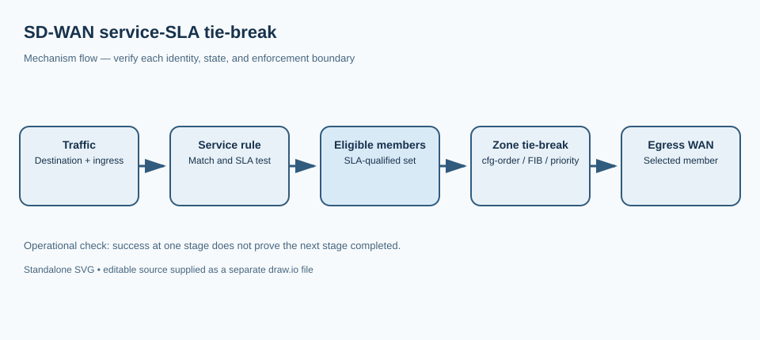
Where tie-break occurs
An SD-WAN service rule can have multiple members that satisfy the configured performance SLA. Once more than one member is eligible, FortiOS needs a deterministic method to choose among those healthy candidates. The zone-level service-sla-tie-break setting defines that choice. The default cfg-order selects SLA-qualified members in the order they are configured. fib-best-match selects the eligible member whose route best matches the destination using the longest prefix in the forwarding information base (FIB).
Tie-break is not the same as SLA measurement. The health-check/SLA logic first determines which members qualify; tie-break then chooses among the qualifying members. It is also not a replacement for the SD-WAN service-rule order, policy route, or firewall policy. A packet can match a service rule and still be forwarded differently if the candidate set or FIB lookup differs from the engineer's assumptions.
Zone and service-rule configuration
The FortiOS 8.0 CLI reference exposes service-sla-tie-break under config system sdwan and config zone. Supported values include cfg-order, fib-best-match, priority, and input-device. At the service-rule level, tie-break zone uses the setting configured on the member's zone; the service can also select a tie-break method directly. Keep the service-level and zone-level configuration aligned so that the effective behavior is predictable.
With fib-best-match, the FIB route for the destination influences which SLA-qualified member is selected. That makes routing-table contents part of the SD-WAN decision. If the desired member's more-specific route is absent, or if that member is not included in the service's eligible member list, the expected choice cannot occur. Do not assume that a static route visible in a policy-route table is equivalent to a native FIB route.
config system sdwan
config zone
edit "virtual-wan-link"
set service-sla-tie-break fib-best-match
next
end
config service
edit 10
set name "business-apps"
set tie-break zone
next
end
endSelection behavior and evidence
The CLI reference defines four behaviors. cfg-order uses configured member order. fib-best-match uses the longest-prefix match in the routing table among SLA-qualified members. priority reselects based on the link-cost-factor. input-device selects by matching the ingress device. These methods solve different design problems: deterministic preference, destination-specific route affinity, cost/quality ranking, or ingress-based symmetry.
Verify the health-check status first, then inspect the service rule's eligible members and tie-break setting, then inspect the FIB route for the destination. Use the route table display to confirm the best route, and capture packets on candidate interfaces to prove which member carried the session. A route lookup alone does not prove the service rule selected that member; the service-rule and SLA state must also be checked.
Troubleshooting and operational caveats
If the wrong member is selected, do not immediately change SLA thresholds. Confirm that the expected members are all eligible, that the service rule matches the intended source/destination, and that the tie-break method is applied at the service or zone scope you expect. With FIB best-match, ensure the desired members are referenced by the rule and that the native routing table contains the specific route. A default route can win when no more-specific route exists.
The recent Community report about implicit-rule spillover after an ingress threshold is exceeded describes a different selection path. It is useful as a contrast: implicit-rule thresholds and session timing are not the same as a zone's SLA tie-break algorithm. Keep the two mechanisms separate when troubleshooting WAN2 not being selected. After changing tie-break behavior, test new sessions to each destination prefix and review existing-session behavior separately.
Scenario source: No directly matched Community/KB/TAC scenario was verified for this selected mechanism in the rolling window. Community research is retained separately and was not used as a primary lesson source.
Supporting guide: FortiOS 8.0 Administration Guide
Scenario research only
Recent Fortinet Community / KB / TAC sweep
All twelve product areas were searched. The 15 verified recent articles below expose release changes, diagnostic boundaries, or operational failure modes. None directly matched the twelve selected lesson mechanisms, so they are not attached as primary lesson sources. Out-of-window results are excluded from the current scenario set.
- FortiGate · 2026-11-13 — Fragmented GTP-U delivered through an IPsec tunnel and throughput tuning with post-encapsulation fragmentationInner fragment delivery to GTP-U endpoint; receiver HPE counters and fragment reassembly memory.
- FortiGate · 2026-10-23; updated 2026-11-12 — Administrator SSO authentication fails after upgrade to FortiOS 7.6.8Separate SSO regression; useful diagnostic boundary between admin identity failure and IPsec fragmentation.
- FortiGate · 2026-10-16 through 2026-11-10 — FortiGate enters conserve mode after upgrading to FortiOS 7.6.8 (IPSEngine 7.01200)Recent engine/resource regression; not used as primary lesson source.
- FortiManager · 2026-10-23 — Install failure on 2 GB RAM FortiGates after FortiManager 7.6.8 upgrade — ssl-ssh-profile udp-not-quicPer-device install verification failure; schedule creation does not guarantee target compatibility.
- FortiAnalyzer · 2026-11-13 — FortiAnalyzer log forwarding stops working after upgrade to 7.6Collector-to-Analyzer server-authentication/certificate common-name issue; source pipeline failure before dashboard aggregation.
- FortiAnalyzer · 2026-11-13 — Analytics database size or range reduced after upgrading FortiAnalyzer to version 7.6 (ClickHouse migration)ClickHouse migration, compression, date-range verification and archive-backed rebuild; relevant to analytics data completeness but not the AI Access Visibility feature definition.
- FortiSwitch · 2026-11-13 — FortiSwitch 1xx series IGMP snooping limit reduced in FortiSwitchOS 7.6.6Recent 1xx series configuration synchronization issue when more than five VLANs enable IGMP snooping; not the selected clock-source mechanism.
- FortiAP/Wireless · 2026-11-03 — FortiAP CAPWAP AP-leave/join behavior with reason AP DTLS peer disconnectedControl-plane keepalive/DTLS failure; used to distinguish CAPWAP loss from VAP broadcast disable.
- FortiNAC · 2026-10-22 — Fnac token expiryQuestion about one-minute web-admin MFA token expiry and email delay; not a dashboard-widget scenario.
- FortiNAC-F · 2026-10-29 — FortiNAC Disconnect-Request fails with RADIUS Disconnect-NAKNAS rejects disconnect request when session-identifying attributes are absent; session can remain active.
- FortiAuthenticator · 2026-11-13 — FortiAuthenticator SSO session failure with NT_STATUS_MORE_PROCESSING_REQUIREDNTLM compatibility case; kept separate from SHA-1 certificate signature digest deprecation.
- FortiPAM · 2026-11-06 — HTTP 400 Bad Request after passkey registration and AD password changeSecret-launch/WAD request parsing issue; separate from auto-provisioned user lifecycle.
- FortiSIEM · 2026-11-13 — Unable to run queries in Analytics due to CANNOT_CONVERT_TYPE error in ClickHouseClickHouse query metadata type-conversion failure; distinguish analytics query failure from Event Log Integrity checksum status.
- FortiSIEM · 2026-11-02 — Fix phParser crashes in FortiSIEM 7.6.1Recent parser race-condition workaround across Super, Worker and Collector roles; not an Event Integrity mechanism.
- Secure SD-WAN · 2026-11-14 — FortiOS 7.4.13 SD-WAN implicit rule spillover not selecting WAN2 despite ingress threshold exceededRecent member-selection scenario; its implicit-rule threshold and session timing are distinct from scheduled speed tests and measured-bandwidth shaping.
Coverage gap: FortiSASE had no verified recent Community result in this sweep. The absence of a direct match is recorded rather than inventing a scenario.
Graded assessment
50-question technical examination
All 50 questions are graded. After submission, the correct answer and a substantive explanation for every option are shown. The answer choices are length-balanced to avoid answer-length clues.
Research records and source policy
- Machine-readable 30-day exclusion inventory — 318 lesson records and 29 published report artifacts, including the earlier November 15 report.
- Selected semantic fingerprints — feature, workflow, failure, evidence, remediation, question and diagram fingerprints for all twelve lessons.
- Community sweep JSON — all twelve product areas, recent scenario articles, excluded out-of-window candidates and direct-match findings.
- Administration-guide sweep JSON — official primary sources and direct-page access limitations.
- Lesson bank JSON — complete lesson content and word counts.
- Question bank JSON — all 50 questions and 200 explanations.
- Diagram manifest JSON — all 24 asset paths.
Source rule: primary lesson sources are official Fortinet documentation. Community articles are scenario material only. Direct Document Library opens returned HTTP 403 in this run; indexed official guide and release-note content was used and the access limitation is disclosed.